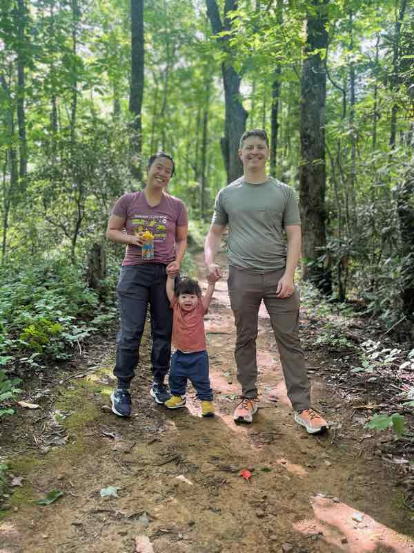

About Ryan Schmidt: Senior B2B SaaS Product Designer
Leadership
Good enterprise design happens in the details: database constraints, edge cases, and the exact spacing on the screen.
At i4cp, I am the only designer working alongside our VP of Product and four developers. My job covers the whole delivery cycle: interviewing members, writing requirements, maintaining our CSS tokens, and testing staging builds before code hits production. If a release looks clunky or breaks on smaller viewports, it stops with me.
Before this at D-Tools, I ran design reviews across five designers and six product managers. The best sessions were never the polite ones—they were the candid ones where an engineer caught an edge case we missed and saved us two weeks of rework.
-
Discovery to release
Interviewing users, writing requirements, designing UI specs, and QAing staging builds before code hits production
-
Design systems
Building CSS tokens and shared component libraries so engineering teams can ship fast without piling up UI debt
-
400+Designlab critique sessions
Mentored 1,500+ designers over 5 years on problem framing, UX research methods, and design rationale
-
Browser prototyping
Building interactive prototypes in code so we can test keyboard navigation, responsive layouts, and edge cases before engineering writes production code
-
Custom AI assistant
An AI chat assistant built with Gemini and vector search so it answers questions from my actual project notes instead of making things up
Builder
I like building what I design. Working in the browser helps me test responsive layouts, keyboard interactions, and the details that are easy to miss in a static mockup.
I started writing code while designing web interfaces for school boards at TASB and transit apps at Bytemark.
These days, I use tools like Cursor and Claude Code to get working concepts into the browser in an afternoon. Prototyping in code lets me test how interactions actually feel, catch accessibility bugs early, and hand developers working markup instead of static pictures.
Experience
Six years designing software for people doing hard jobs, from warehouse dispatchers to HR executives.
I’ve designed software for school boards, city bus fleets, commercial AV integrators, and Fortune 500 HR executives.
My anthropology background taught me to observe how people actually work and listen for the workarounds they don't even think to mention. Flying as a naval aircrewman drilled in checklist discipline: when stakes are high, clear procedures keep you grounded. That combination keeps me focused on cutting through messy requirements to build tools that are calm, reliable, and hard to break.
-
18KD-Tools active users
Owned UX across 5 Cloud modules as active users grew from 6,500 to 18,000
-
92%Design system adoption
100+ production components built and adopted across all engineering teams
Career History
-
Senior Product Designer (Solo Design Lead) · Institute for Corporate Productivity (i4cp)
Design lead across three core platforms working directly with four developers and our VP of Product. Built our CSS token system, led the redesign of Ahri (conversational AI research assistant, driving +500% session growth), and established the company's first user research practice.
-
Senior Product Designer · D-Tools, Inc.
Promoted from Product Designer (Jan 2025). Owned end-to-end UX across 5 B2B Cloud modules as active users grew from 6,500 to 18,000. Designed real-time inventory MVP (+8% platform ARR lift, 8% YoY adoption growth), custom dashboards (+71% sustained dashboard views, 62% multi-dashboard adoption), and 100+ component design system (92% engineering adoption).
-
Senior Critique Facilitator · Designlab
Led 400+ structured critique sessions and mentored 1,500+ designers on problem framing, UX research methods, and design rationale over 5 years.
-
Earlier Experience & Service
Product Designer at Bytemark (mobile transit ticketing SaaS, 2021); UI/UX Designer & Facility Specialist at TASB (school board operations SaaS, 2014–2021); US Navy Reserve Aircrewman (AWF3, Secret Clearance, naval flight operations and high-pressure checklist discipline, 2011–2014).
Education & Certifications
-
Fullstack Developer Certification
Scrimba · Modern frontend engineering and fullstack web application development
-
Design Systems Certification
Memorisely · Token architectures, component scalability, and handoff workflows
-
UX/UI Design Certification
Designlab · UX Academy immersion in user research, information architecture, and prototyping
-
BA, Anthropology
Clarion University of Pennsylvania · Qualitative Research Methods concentration

Life Lately
I live in Austin with my wife, our toddler, and two cats named Pickles and Pesto. Most of life right now revolves around my son: parks, swimming, bedtime stories, snacks in places snacks absolutely should not be, and getting outside whenever we can.
When I'm not designing, I'm usually captaining a beer-league hockey team, trying to learn guitar riffs that are definitely above my skill level, or cooking recipes stolen from our travels. I grew up in Pittsburgh. I definitely don't miss scraping ice off my windshield in February, but I do miss a real white Christmas.